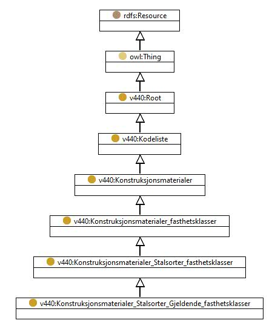

http://rdf.vegdata.no/v440-owl#Konstruksjonsmaterialer_Stalsorter_Gjeldende_fasthetsklasser
Class Konstruksjonsmaterialer_Stalsorter_Gjeldende_fasthetsklasser

v440:avsnitt
V-8.6
v440:kapitel
V-8
v440:kode
-
rdf:type
owl:Class
rdfs:label
Stålsorter - Gjeldende fasthetsklasser
rdfs:subClassOf
v440:Konstruksjonsmaterialer_Stalsorter_fasthetsklasser
Instances
v440:Konstruksjonsmaterialer_Stalsorter_Gjeldende_fasthetsklasser_Annet_stal
,
v440:Konstruksjonsmaterialer_Stalsorter_Gjeldende_fasthetsklasser_Hulprofilstal_kvalitet_Annet
,
v440:Konstruksjonsmaterialer_Stalsorter_Gjeldende_fasthetsklasser_Hulprofilstal_kvalitet_S275J2H
,
v440:Konstruksjonsmaterialer_Stalsorter_Gjeldende_fasthetsklasser_Hulprofilstal_kvalitet_S355J2H
,
v440:Konstruksjonsmaterialer_Stalsorter_Gjeldende_fasthetsklasser_Hulprofilstal_kvalitet_S355NH
,
v440:Konstruksjonsmaterialer_Stalsorter_Gjeldende_fasthetsklasser_Hulprofilstal_kvalitet_S355NLH
,
v440:Konstruksjonsmaterialer_Stalsorter_Gjeldende_fasthetsklasser_Hulprofilstal_kvalitet_S460NH
,
v440:Konstruksjonsmaterialer_Stalsorter_Gjeldende_fasthetsklasser_Hulprofilstal_kvalitet_S460NLH
,
v440:Konstruksjonsmaterialer_Stalsorter_Gjeldende_fasthetsklasser_Sveisbare_finkornbehandlete_konstruksjonsstal_kvalitet_Annet
,
v440:Konstruksjonsmaterialer_Stalsorter_Gjeldende_fasthetsklasser_Sveisbare_finkornbehandlete_konstruksjonsstal_kvalitet_S355N
,
v440:Konstruksjonsmaterialer_Stalsorter_Gjeldende_fasthetsklasser_Sveisbare_finkornbehandlete_konstruksjonsstal_kvalitet_S355NL
,
v440:Konstruksjonsmaterialer_Stalsorter_Gjeldende_fasthetsklasser_Sveisbare_finkornbehandlete_konstruksjonsstal_kvalitet_S420M
,
v440:Konstruksjonsmaterialer_Stalsorter_Gjeldende_fasthetsklasser_Sveisbare_finkornbehandlete_konstruksjonsstal_kvalitet_S420ML
,
v440:Konstruksjonsmaterialer_Stalsorter_Gjeldende_fasthetsklasser_Sveisbare_finkornbehandlete_konstruksjonsstal_kvalitet_S420N
,
v440:Konstruksjonsmaterialer_Stalsorter_Gjeldende_fasthetsklasser_Sveisbare_finkornbehandlete_konstruksjonsstal_kvalitet_S420NL
,
v440:Konstruksjonsmaterialer_Stalsorter_Gjeldende_fasthetsklasser_Sveisbare_finkornbehandlete_konstruksjonsstal_kvalitet_S460M
,
v440:Konstruksjonsmaterialer_Stalsorter_Gjeldende_fasthetsklasser_Sveisbare_finkornbehandlete_konstruksjonsstal_kvalitet_S460ML
,
v440:Konstruksjonsmaterialer_Stalsorter_Gjeldende_fasthetsklasser_Ulegert_konstruksjonsstal_kvalitet_Annet
,
v440:Konstruksjonsmaterialer_Stalsorter_Gjeldende_fasthetsklasser_Ulegert_konstruksjonsstal_kvalitet_S185
,
v440:Konstruksjonsmaterialer_Stalsorter_Gjeldende_fasthetsklasser_Ulegert_konstruksjonsstal_kvalitet_S235
,
v440:Konstruksjonsmaterialer_Stalsorter_Gjeldende_fasthetsklasser_Ulegert_konstruksjonsstal_kvalitet_S235J2G3
,
v440:Konstruksjonsmaterialer_Stalsorter_Gjeldende_fasthetsklasser_Ulegert_konstruksjonsstal_kvalitet_S235JO
,
v440:Konstruksjonsmaterialer_Stalsorter_Gjeldende_fasthetsklasser_Ulegert_konstruksjonsstal_kvalitet_S235JR
,
v440:Konstruksjonsmaterialer_Stalsorter_Gjeldende_fasthetsklasser_Ulegert_konstruksjonsstal_kvalitet_S235JRG1
,
v440:Konstruksjonsmaterialer_Stalsorter_Gjeldende_fasthetsklasser_Ulegert_konstruksjonsstal_kvalitet_S235JRG2
,
v440:Konstruksjonsmaterialer_Stalsorter_Gjeldende_fasthetsklasser_Ulegert_konstruksjonsstal_kvalitet_S275
,
v440:Konstruksjonsmaterialer_Stalsorter_Gjeldende_fasthetsklasser_Ulegert_konstruksjonsstal_kvalitet_S275J2G3
,
v440:Konstruksjonsmaterialer_Stalsorter_Gjeldende_fasthetsklasser_Ulegert_konstruksjonsstal_kvalitet_S275JO
,
v440:Konstruksjonsmaterialer_Stalsorter_Gjeldende_fasthetsklasser_Ulegert_konstruksjonsstal_kvalitet_S275JR
,
v440:Konstruksjonsmaterialer_Stalsorter_Gjeldende_fasthetsklasser_Ulegert_konstruksjonsstal_kvalitet_S355
,
v440:Konstruksjonsmaterialer_Stalsorter_Gjeldende_fasthetsklasser_Ulegert_konstruksjonsstal_kvalitet_S355J2J3
,
v440:Konstruksjonsmaterialer_Stalsorter_Gjeldende_fasthetsklasser_Ulegert_konstruksjonsstal_kvalitet_S355JO
References
as rdfs:subClassOf (
v440:Konstruksjonsmaterialer_Stalsorter_Gjeldende_fasthetsklasser_Ulegert_konstruksjonsstal
,
v440:Konstruksjonsmaterialer_Stalsorter_Gjeldende_fasthetsklasser_Hulprofilstal
,
v440:Konstruksjonsmaterialer_Stalsorter_Gjeldende_fasthetsklasser_Sveisbare_finkornbehandlete_konstruksjonsstal
)
Generated with
TopBraid Composer
by
TopQuadrant, Inc.